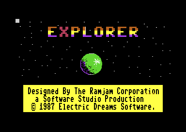
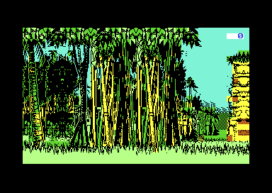
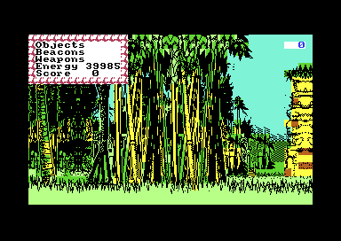
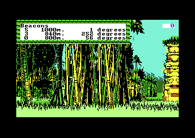
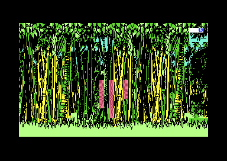
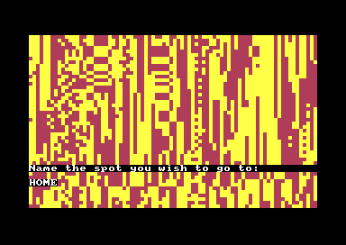
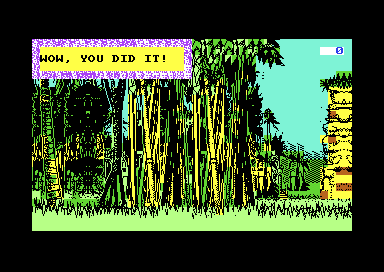
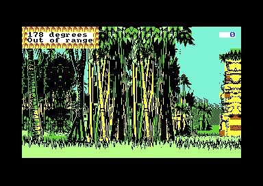

<meta charset="utf-8">
<meta name="viewport" content="width=device-width, initial-scale=1">
<title>Explorer</title>
<link rel="preconnect" href="https://fonts.googleapis.com">
<link rel="stylesheet" href="https://fonts.googleapis.com/css2?family=Lato:wght@400;700;900&family=IBM+Plex+Mono:wght@400;500&display=swap">
<style>
:root{
  --bg:#23262d; --paper:#e9e7e1; --surface:#ffffff; --surface-2:#f1efea; --line:#d5d3cc; --line-soft:#e0ded8;
  --ink:#2f3136; --ink-soft:#55585f; --ink-mute:#80838a;
  --link:#1f5fa8; --link-hover:#154480; --accent:#1f5fa8;
  --amber:#c25a00; --cyan:#1f5fa8; --coral:#d04a3a; --green:#2a8a4a; --violet:#4a5bd6; --hl:#fff0c2;
  --chip:#2f3136; --chip-ink:#ffffff;
  --c64blue:#40318d; --c64grey:#686868;
  --fd:'Lato',system-ui,sans-serif; --fb:'Lato',system-ui,sans-serif; --fm:'IBM Plex Mono',ui-monospace,Menlo,monospace;
  --col:1080px; --gx:68px; --fs:17px; --lh:1.6; --hw:900; --h1:46px; --h2:26px; --sy:48px; --pp:26px; --r:10px;
  --plate-shadow:0 1px 2px rgba(0,0,0,.05),0 4px 14px rgba(0,0,0,.05);
}
*{box-sizing:border-box}
html{background:var(--bg);min-height:100%}
body{background:var(--paper);color:var(--ink);font-family:var(--fb);font-size:var(--fs);line-height:var(--lh);max-width:var(--col);margin:0 auto;min-height:100vh;padding:0 0 4rem}
h1,h2,h3{font-weight:var(--hw);letter-spacing:-.01em;text-wrap:balance;color:var(--ink);margin:0}
.wrap{padding:0 var(--gx)}
.hero{padding:48px var(--gx) 8px;text-align:left}
.eyebrow{font-family:var(--fm);font-size:12px;letter-spacing:.08em;text-transform:uppercase;color:var(--ink-mute);margin:0 0 10px}
.hero h1{font-size:var(--h1);line-height:1.15;letter-spacing:-.02em;margin:0 0 14px}
.hero .sub{margin:0 0 .6em;color:var(--ink-soft)}
section{padding:var(--sy) 0 24px}
section:last-of-type{border-bottom:none}
.fig{font-family:var(--fm);font-size:12px;letter-spacing:.08em;text-transform:uppercase;color:var(--ink-mute);margin:0 0 10px}
h2.t{font-size:var(--h2);margin-bottom:12px}
.lede{color:var(--ink-soft);margin:0 0 30px}
.plate{background:var(--surface);border:1px solid var(--line);border-radius:var(--r);padding:var(--pp);box-shadow:var(--plate-shadow)}
.cap{font-size:14px;color:var(--ink-mute);margin-top:14px;line-height:1.55}
.cap b{color:var(--ink);font-weight:700}
code{font-family:var(--fm);font-size:.82em;background:var(--chip);color:var(--chip-ink);border-radius:4px;padding:2px 6px;overflow-wrap:break-word;-webkit-box-decoration-break:clone;box-decoration-break:clone}
.ex-pair{display:flex;gap:16px;flex-wrap:wrap;align-items:flex-start}
.ex-pair figure{margin:0;flex:1 1 300px}
.ex-pair img,.ex-pair canvas{width:100%;image-rendering:pixelated;display:block;border-radius:4px;background:#000}
.ex-pair figcaption{font-size:13px;color:var(--ink-mute);margin-top:6px}
.ex-bar{display:flex;gap:8px;flex-wrap:wrap;align-items:center;margin:14px 0 0;font-family:var(--fm);font-size:13px}
.ex-bar button,.ex-bar select,.ex-bar input{font-family:var(--fm);font-size:13px;padding:6px 10px;border:1px solid var(--line);border-radius:6px;background:var(--surface-2);color:var(--ink);cursor:pointer}
.ex-bar input{cursor:text;width:16em}
.ex-bar button:hover{background:#e6e3dc}
.ex-read{font-family:var(--fm);font-size:13px;color:var(--ink-soft);margin-top:10px;min-height:3em;white-space:pre-wrap}
.ex-tab{border-collapse:collapse;font-size:14px;width:100%}
.ex-tab th,.ex-tab td{border-bottom:1px solid var(--line-soft);padding:6px 8px;text-align:left;vertical-align:top}
.ex-tab th{font-family:var(--fm);font-size:12px;letter-spacing:.04em;text-transform:uppercase;color:var(--ink-mute);font-weight:500}
.ex-tab td.n{text-align:right;font-family:var(--fm)}
.ex-layers{display:grid;grid-template-columns:repeat(4,1fr);gap:10px}
.ex-layers canvas{width:100%;image-rendering:pixelated;border-radius:4px;display:block}
.ex-layers div{font-family:var(--fm);font-size:12px;color:var(--ink-mute);margin-top:4px}
.ex-gallery{display:flex;flex-wrap:wrap;gap:10px;align-items:flex-end}
.ex-gallery figure{margin:0;text-align:center}
.ex-gallery canvas{image-rendering:pixelated;background:#000;display:block}
.ex-gallery figcaption{font-family:var(--fm);font-size:11px;color:var(--ink-mute)}
.ex-attr{display:grid;grid-template-columns:repeat(8,1fr);gap:4px}
.ex-attr div{height:34px;border-radius:3px;display:flex;overflow:hidden;cursor:pointer;border:2px solid transparent}
.ex-attr div.sel{border-color:var(--ink)}
.ex-attr span{flex:1;display:flex;align-items:center;justify-content:center;font-family:var(--fm);font-size:16px;font-weight:700}
@media (max-width:700px){:root{--gx:20px;--h1:36px}.ex-layers{grid-template-columns:repeat(2,1fr)}}
</style>
<!-- tabs -->
<header class="hero">
  <p class="eyebrow">1987 · Electric Dreams Software</p>
  <h1>Explorer</h1>
  <p class="sub">A jungle planet of four billion places, with nine pieces of a spaceship hidden in it. The whole landscape comes out of forty bytes of numbers and one 256-byte line of heights, worked out afresh every time the screen is drawn.</p>
</header>
<main class="wrap">

<section id="game">
  <p class="fig">01 · The game</p>
  <h2 class="t">Stranded on an emerald planet</h2>
  <div class="ex-pair">
    <figure><figcaption>The title screen, a picture the loader puts in place before the game starts.</figcaption></figure>
    <figure><figcaption>The view on the ground, facing north. The number at the top right is the compass.</figcaption></figure>
  </div>
  <p>Your spaceship has broken up over a jungle planet, and you have survived the landing. Nine fragments of the craft lie scattered across the planet. You win by bringing all nine together in one spot and standing on it.</p>
  <p>You have a jet pack, a sonar that finds the nearest fragment, nine radio beacons, nine drones that carry a fragment to a beacon, a compass, and a laser gun for the robot bugs that roam the jungle. Every action costs energy. In the air you see the planet from above, as a map that scrolls north, south, east and west. On the ground you see the jungle in front of you, and you walk and turn. Strange striped patches in the jungle are doorways: step into one, type the name of any place, and it takes you there.</p>
  <p>Explorer was written by Graham Relf for the ZX Spectrum, with graphics by Simon Dunstan of the Ramjam Corporation, and converted to the Commodore 64. The conversion keeps the Spectrum's colour scheme inside every picture, as <a href="#colours">a later section shows</a>.</p>
</section>

<section id="walk">
  <p class="fig">02 · Walk the planet</p>
  <h2 class="t">The map and the jungle, drawn by the game's own code</h2>
  <p class="lede">Turn, walk, fly up and down, or jump to a fragment. Both pictures are made from the bytes in the Source tab.</p>
  <div class="plate">
    <div class="ex-pair">
      <figure><canvas id="ex-map" width="320" height="192"></canvas><figcaption>From above: the game's map, 20 by 12 cells. The white square is you. Click a cell to read its ground, or double-click to walk there.</figcaption></figure>
      <figure><canvas id="ex-view" width="320" height="200"></canvas><figcaption>On the ground, facing the way the compass says.</figcaption></figure>
    </div>
    <div class="ex-bar">
      <button type="button" id="ex-left">◀ turn left</button>
      <button type="button" id="ex-fwd">▲ step</button>
      <button type="button" id="ex-right">turn right ▶</button>
      <button type="button" id="ex-about">▼ about turn</button>
      <button type="button" id="ex-height">fly higher</button>
      <select id="ex-goto" aria-label="Jump to a place">
        <option value="">jump to…</option>
        <option value="start">the landing place</option>
        <option value="door">beside a doorway</option>
      </select>
    </div>
    <div class="ex-read" id="ex-walk-read">Loading the listing…</div>
    <p class="cap"><b>How it was checked.</b> The map is a JavaScript copy of the game's own map routine (<code>draw_map</code> at <code>$2B25</code>) and its ground routine (<code>terrain_at</code> at <code>$32D6</code>). The ground view is the game's own routine (<code>draw_ground_view</code> at <code>$1258</code>) run on a model of the 6502 processor, on the bytes in the listing. At "the landing place" in the jump list, facing north, both pictures match the emulator's screen exactly: 0 pixels of the map's 61,440 differ, and 0 of the ground view's 64,000. The JavaScript copy of the ground routine gives the game's answer at 200,072 points tested (<code>test_terrain.js</code>).</p>
  </div>
  <p>A step is 16 units along the compass bearing, and the planet is 65,536 units across in each direction, so it wraps round: walk far enough east and you come back from the west. The map from above shows one cell for every 16 units at the lower height and one for every 32 at the higher. On the ground, the game draws the 24 cells round you. It draws the 16 cells two steps away first, then the 8 next to you on top of them, each at its compass direction on a 64-column horizon of which 40 columns are on the screen.</p>
  <p>The game refuses a step when the top of a near tree trunk fills the middle of the view. It tests one character cell, row 3 and column 19 of the screen, for the colour of black on yellow (<code>step_forward</code> at <code>$162D</code>), and the step button here does the same.</p>
</section>

<section id="terrain">
  <p class="fig">03 · A planet from forty bytes</p>
  <h2 class="t">Four layers of the same line of heights</h2>
  <p class="lede">Nothing about the landscape is stored. Every time a cell is drawn, the game works out what grows there.</p>
  <div class="plate">
    <canvas id="ex-profile" width="768" height="140" style="width:100%;display:block"></canvas>
    <p class="cap">The terrain profile at <code>$4700</code>: 256 heights from 2 to 138.</p>
    <div class="ex-layers" id="ex-layers"></div>
    <p class="cap">The four layers over 128 by 128 cells round you (the white square is the map above). Bright means a high sum. A coloured cell passes that layer's test, and the colours are the ones the next paragraphs use.</p>
    <div class="ex-read" id="ex-cell-read">Click a cell on the map above to see its four sums.</div>
  </div>
  <p>The method is Graham Relf's, from his earlier orienteering game The Forest. It starts from a single line of 256 heights, the profile. To find the ground at a point east <i>x</i> and north <i>y</i>, the game multiplies <i>x</i> and <i>y</i> by two small numbers, adds the products, and keeps the lowest 8 bits of the result: a number from 0 to 255 that says where to look along the profile. Doing this along five different directions and adding the five heights gives one <i>layer</i>. One direction alone would make parallel stripes. Five at different angles add up to blotches, as the layer pictures below the profile show.</p>
  <p>The game works out four layers like this, each with its own five pairs of numbers. All forty numbers are the table <code>terrain_layers</code> at <code>$341B</code>, and the routine is <code>terrain_at</code> at <code>$32D6</code>. The layers decide the ground in order:</p>
  <table class="ex-tab">
    <tr><th>Test</th><th>Ground</th><th>On the map</th><th>Cells</th></tr>
    <tr><td>Layer 1 is 204 or less</td><td>water</td><td>pale blue, with ripples</td><td class="n">14.3 %</td></tr>
    <tr><td>otherwise, layer 2 is 150 or less</td><td>kind 8</td><td>open ground with huts</td><td class="n">3.3 %</td></tr>
    <tr><td>otherwise, layers 3 and 4 are both 255 or less</td><td>kind 6</td><td>open ground</td><td class="n">8.6 %</td></tr>
    <tr><td>only layer 3 is 255 or less</td><td>kind 4</td><td>open ground</td><td class="n">18.0 %</td></tr>
    <tr><td>only layer 4 is 255 or less</td><td>kind 2</td><td>jungle</td><td class="n">18.1 %</td></tr>
    <tr><td>neither</td><td>kind 0</td><td>jungle</td><td class="n">37.9 %</td></tr>
  </table>
  <p class="cap">Shares from 400,000 cells drawn at random across the planet.</p>
  <p>The first layer's sum is also the ground's height, and two bits of the last layer's sum pick one of four map tiles for the cell (<code>map_tiles</code> at <code>$27F4</code>). A landing is safe on kinds 4, 6 and 8, about 30 % of the planet. Coming down on jungle or water is a crash, which costs 500 energy and sends you to a doorway's "Name the spot you wish to go to" (<code>crash</code> at <code>$2C03</code>).</p>
</section>

<section id="scenery">
  <p class="fig">04 · What grows where</p>
  <h2 class="t">The jungle is a chain of pictures</h2>
  <p class="lede">The ground's kind picks a list of pictures. Each picture drawn picks the list for the next one.</p>
  <div class="plate">
    <div class="ex-gallery" id="ex-gallery"></div>
    <p class="cap">The 43 pictures of the ground view, each drawn by the game's own routine (<code>draw_image</code> at <code>$2F99</code>) from its record in <code>object_records</code> at <code>$363F</code>. Any of them can also be drawn mirrored. Objects 20, 41 and 42 are never drawn in play: <a href="discoveries.html#unused">Discoveries</a> has them.</p>
  </div>
  <p>For each of the 24 cells round you, the game picks a list of objects by the cell's kind of ground, two bits of its last layer's sum, and whether the cell is near or far (<code>scenery_list_for</code> at <code>$3443</code>). Its random numbers choose one object from the list, and the game draws it at the cell's place on the horizon. Every object's record names the list the next object comes from, so each object decides which objects can join it in the cell. After three objects the chain takes the first entry of each list, and an entry of 0 ends it.</p>
  <p>Before drawing a cell, the game sets those random numbers from the cell's height (<code>draw_scenery_at</code> at <code>$10FF</code>), so a cell grows the same jungle every time it is drawn. Walk away and come back, and every tree is where it was.</p>
  <p>A picture is a run of character cells. Each cell is a Spectrum colour byte and eight bytes of pixels, followed by a byte that says how far to move to the next cell. A colour byte of <code>$80</code> or more draws the cell's pixels over whatever is already there, behind a mask, so that trunks stand in front of the trees further back. The masks are tables at <code>$4400</code> and <code>$4500</code>. A colour byte of <code>$28</code> leaves the colour that is already there, which lets a tree's black outline sit on the blue sky.</p>
</section>

<section id="colours">
  <p class="fig">05 · Spectrum colours on a Commodore 64</p>
  <h2 class="t">Every picture still carries Spectrum colours</h2>
  <div class="plate">
    <div class="ex-attr" id="ex-attr"></div>
    <div class="ex-read" id="ex-attr-read">Click a swatch.</div>
    <p class="cap">Each swatch is one Spectrum colour byte: the left half as a Spectrum shows it, the right half as the Commodore 64 draws it, through the table <code>attr_colours</code> at <code>$2F09</code>. Rows are the background colour, normal and then bright; columns are the foreground colour. The swatch with a frame is <code>$72</code>.</p>
  </div>
  <p>The ZX Spectrum colours its screen in blocks of 8 by 8 pixels, each with one byte: three bits for the foreground colour ("ink"), three for the background ("paper"), one for brightness and one for flashing. The Commodore 64's hires bitmap also colours blocks of 8 by 8 pixels, with one byte holding two of its 16 colours. So the conversion keeps every Spectrum picture as it was and changes each colour byte as it draws (<code>attr_to_colour</code> at <code>$2EFE</code>), through a table of 128 entries. The C64 has no flashing, so the flash bit is dropped, and the game uses it instead to mean "draw this cell behind a mask".</p>
  <p>The Spectrum's eight colours become the C64's black, blue, red, purple, green, cyan, yellow and white. Bright black, blue, red, magenta, green, cyan, yellow and white become black, light blue, light red, brown, light green, grey, orange and light grey. One entry breaks the pattern: <code>$72</code>, bright red on yellow, becomes light red on red. That is the doorway's colour, and the game finds a doorway by looking for it.</p>
</section>

<section id="instruments">
  <p class="fig">06 · Instruments and energy</p>
  <h2 class="t">What everything costs</h2>
  <div class="ex-pair">
    <figure><figcaption>Any key that is not a move opens the menu.</figcaption></figure>
    <figure><figcaption>Fix 3 nearest, with three beacons down.</figcaption></figure>
  </div>
  <table class="ex-tab" style="margin-top:18px">
    <tr><th>Action</th><th>Energy</th><th>Routine</th></tr>
    <tr><td>Start</td><td class="n">40,000</td><td><code>zp_image</code> <code>$0C92</code></td></tr>
    <tr><td>Each view on the ground (a step, a turn, a landing)</td><td class="n">−15</td><td><code>draw_ground_view</code> <code>$1258</code></td></tr>
    <tr><td>Take off</td><td class="n">−100</td><td><code>take_off</code> <code>$1728</code></td></tr>
    <tr><td>Fly higher</td><td class="n">−50</td><td><code>go_up</code> <code>$2879</code></td></tr>
    <tr><td>Fire the laser</td><td class="n">−500</td><td><code>fire_laser</code> <code>$2437</code></td></tr>
    <tr><td>Crash, if there is that much</td><td class="n">−500</td><td><code>crash</code> <code>$2C03</code></td></tr>
    <tr><td>Send a fragment to a beacon</td><td class="n">−1,000</td><td><code>send_to_beacon</code> <code>$1A53</code></td></tr>
    <tr><td>Run out</td><td class="n">set to 2,000</td><td><code>energy_gone</code> <code>$231A</code></td></tr>
  </table>
  <p>Flying over the map, the sonar, the beacons and the doorways cost nothing, though the game works out a charge or a refill for every doorway trip and then drops it (<a href="discoveries.html#refill">Discoveries</a>). Running out of energy is not the end: the game says "Energy gone", gives you 2,000, and asks where you want to go, as a doorway does. There is no game over.</p>
  <p>The <b>sonar</b> ("Echo nearest") finds the nearest fragment, measuring distance as the distance east plus the distance north. Under 1,280 units, an echo comes back after a delay of a quarter of the distance, and the window gives its bearing. Further away, it still gives the bearing, with "Out of range" (<code>echo_nearest</code> at <code>$19A8</code>). For anything south-west of you, the bearing is wrong (<a href="discoveries.html#bearings">Discoveries</a>). The <b>beacons</b> are dropped where you stand, and "Fix 3 nearest" lists the three nearest with their distances and bearings, so you can find your way between them (<code>fix_beacons</code> at <code>$1BFD</code>). A <b>drone</b> carries the fragment you are standing on to any beacon less than 16,384 units away: the fragment's position becomes the beacon's (<code>send_to_beacon</code> at <code>$1A53</code>).</p>
  <p>The <b>bugs</b> come one at a time. Each new view on the ground has a chance of (score + 1) in 256 of bringing one, where the score is the number of fragments you have seen, so they come more often as you do well (<code>maybe_new_bug</code> at <code>$1436</code>). A bug locks you into the weapons mode until you shoot it, and each shot costs 500.</p>
</section>

<section id="doorways">
  <p class="fig">07 · Doorways</p>
  <h2 class="t">Every name is a place</h2>
  <div class="plate">
    <div class="ex-pair">
      <figure><figcaption>A doorway one step away.</figcaption></figure>
      <figure><figcaption>The prompt, with HOME typed.</figcaption></figure>
    </div>
    <div class="ex-bar">
      <input id="ex-name" value="HOME" maxlength="31" aria-label="A place name">
      <button type="button" id="ex-go">go there</button>
    </div>
    <div class="ex-read" id="ex-name-read"></div>
    <p class="cap">A JavaScript copy of the game's sums (<code>name_destination</code> at <code>$0E23</code>), checked against the game's own code on 20,007 names (<code>test_names.js</code>). In the emulator, HOME arrived at 48,356 east and 48,609 north. "Go there" moves the walk above to the place.</p>
  </div>
  <p>A doorway is a cell whose last layer adds up to a number whose lowest byte is 12, about one cell in 260. Two in three are in jungle, and the rest on open ground. When a doorway is within two cells, the game draws its striped patch in front of you, at the middle of the bottom of the view (<code>scenery_doorway</code> at <code>$1183</code>). On your next step it checks the middle of the view for the doorway's colour, and if it is there, it asks "Enter doorway" (<code>after_step</code> at <code>$16B6</code>).</p>
  <p>Press E and the screen fills with stripes and asks you to name a place. The game turns the name into a position with two sums. The east position starts at 0, and for each letter it adds the letter's code and then turns the 16-bit number five places to the left, the bits that fall off the top coming back in at the bottom. The north position does the same over the name read backwards, from the end of the name to its second letter. The sums are the same in every game, so a name always leads to the same place, and a well-chosen name puts you one step from a fragment (<a href="discoveries.html#fragments">Discoveries</a>).</p>
</section>

<section id="end">
  <p class="fig">08 · The end</p>
  <h2 class="t">Nine fragments in one cell</h2>
  <div class="ex-pair">
    <figure><figcaption>The last screen of the game.</figcaption></figure>
    <figure><figcaption>The sonar's answer for a fragment 1,344 units away.</figcaption></figure>
  </div>
  <p>After every step, the game checks whether all nine fragments lie on the cell you are standing in (<code>check_win</code> at <code>$0DBA</code>). Fragments start far apart, so the way to bring them together is to drop a beacon, send every fragment to it with the drones, and then walk to the beacon. When the last check passes, a window says "WOW, YOU DID IT!" and the program stops: its last instruction is a jump to itself (<code>$0E0E</code>).</p>
  <p>The score in the menu is the number of different fragments you have seen. It counts each one once, and the "Found:" line in the objects menu shows their numbers.</p>
</section>

</main>
<footer style="margin:16px 0 0;padding:22px var(--gx) 0;border-top:1px solid #e0ded8;font-family:'IBM Plex Mono',ui-monospace,Menlo,monospace;font-size:12px;color:#80838a"><a href="https://github.com/gamesexplained/gamesexplained" style="color:#1f5fa8;text-decoration:none">GitHub</a> · <a href="https://discord.gg/3V9GWyRDWV" style="color:#1f5fa8;text-decoration:none">Discord</a><br>© Games Explained contributors. Write-ups, facts and symbol maps are available under <a href="https://creativecommons.org/licenses/by-sa/4.0/" style="color:#1f5fa8;text-decoration:none">CC BY-SA 4.0</a>; code under <a href="https://opensource.org/licenses/MIT" style="color:#1f5fa8;text-decoration:none">MIT</a></footer>
<script src="../../lib/c64.js"></script>
<script src="../../lib/cpu6502.js"></script>
<script>
/* ex-terrain */
// A copy of terrain_at ($32D6), layer_sum_at ($3350) and mul_coef ($33A4), step by step.
// coef: terrain_layers ($341B, 40 bytes); prof: terrain_profile ($4700, 256 bytes).
function makeTerrain(coef, prof) {
  function mul(v, k) {                 // mul_coef: v (16 bits) times the coefficient byte k, over 128
    let we = 0, c = 0, a = k;
    const sub = (k & 0x80) !== 0;      // bit 7: subtract instead of add
    for (let i = 0; i < 7; i++) {
      let out = we & 1; we = (we >>> 1) | (c << 15); c = out;   // ror we
      out = a & 1; a = (a >>> 1) | (c << 7); c = out;           // ror the coefficient
      if (!c) continue;
      if (!sub) { const s = we + v; we = s & 0xFFFF; c = s >>> 16; }
      else { const s = we - v; we = s & 0xFFFF; c = s < 0 ? 1 : 0; }
    }
    return (we >>> 1) | (c << 15);
  }
  function layer(n, x, y) {            // one layer: five heights from the profile, added
    let sum = 0;
    for (let i = 0; i < 5; i++)
      sum += prof[(mul(x, coef[n * 10 + 2 * i]) + mul(y, coef[n * 10 + 2 * i + 1])) & 0xFF];
    return sum;
  }
  function terrainAt(x, y) {           // kind 0-8, or 10 for water; the height; the last layer's sum
    const l1 = layer(0, x, y);
    if (l1 <= 204) return { kind: 10, height: 200, last: l1 };
    const l2 = layer(1, x, y);
    if (l2 <= 150) return { kind: 8, height: l1, last: l2 };
    const l3 = layer(2, x, y), l4 = layer(3, x, y);
    return { kind: l3 <= 255 ? (l4 <= 255 ? 6 : 4) : (l4 <= 255 ? 2 : 0), height: l1, last: l4 };
  }
  return { terrainAt, layer };
}
// end of ex-terrain
</script>
<script>
/* ex-names */
// A copy of name_destination's sums ($0E48-$0ECE): a name, as read_name keeps it (upper case,
// a zero after it), to the position a doorway sends the explorer to.
function namePlace(name) {
  const c = [];
  for (const ch of name.toUpperCase()) c.push(ch.charCodeAt(0) & 0xFF);
  function add(v, k) {                 // add the byte, then turn 17 bits (the carry too) five places
    let s = v + k, carry = s >>> 16; s &= 0xFFFF;
    for (let i = 0; i < 5; i++) { const out = s >>> 15; s = ((s << 1) & 0xFFFF) | carry; carry = out; }
    return s;
  }
  let x = 0, y = 0;
  for (let i = 0; i < c.length; i++) x = add(x, c[i]);
  for (let i = c.length; i >= 1; i--) y = add(y, i === c.length ? 0 : c[i]);
  return { x, y };
}
// end of ex-names
</script>
<script>
(function () {
  const $ = id => document.getElementById(id);
  const say = (id, t) => { $(id).textContent = t; };
  if (typeof C64 === 'undefined' || typeof C64Cpu === 'undefined') {
    say('ex-walk-read', 'This widget needs the site\'s scripts (c64.js and cpu6502.js), which load only from the built site.');
    return;
  }
  const PAL = C64.PAL;
  const KIND = { 0: 'jungle (kind 0)', 2: 'jungle (kind 2)', 4: 'open ground (kind 4)', 6: 'open ground (kind 6)', 8: 'open ground with huts (kind 8)', 10: 'water' };
  const FRAG = [];
  let L, T, base, conv, st = { x: 65376, y: 144, h: 16, step: 16 };

  // The game's code on the kit's 6502, on the listing's bytes, with zero page as the start-up sets it.
  const io = { read: a => (a === 0xD012 ? 250 : 0), write: () => {} };
  function machine() {
    const m = base.slice();
    return { m, cpu: new C64Cpu.CPU(m, { port: 0x35, io }) };
  }
  function groundView(x, y, h) {
    const { m, cpu } = machine();
    m[0x19] = x & 255; m[0x1A] = x >> 8; m[0x1B] = y & 255; m[0x1C] = y >> 8; m[0x37] = h & 63;
    cpu.call(0x1258, {}, { maxSteps: 5e7 });          // draw_ground_view into the hidden screen
    cpu.call(0x1EB5, {}, { maxSteps: 5e7 });          // show_view: swap, then the compass
    const pg = m[0x08] ^ 0x80;
    return { m, scr: pg << 8, bmp: (pg + 0x20) << 8 };
  }
  function paintBitmap(ctx, v, rows) {
    const img = ctx.createImageData(320, rows * 8), d = img.data, rgb = PAL.map(h => [1, 3, 5].map(i => parseInt(h.substr(i, 2), 16)));
    for (let cy = 0; cy < rows; cy++) for (let cx = 0; cx < 40; cx++) {
      const col = v.m[v.scr + cy * 40 + cx];
      for (let y = 0; y < 8; y++) {
        const b = v.m[v.bmp + (cy * 40 + cx) * 8 + y];
        for (let x = 0; x < 8; x++) {
          const c = rgb[(b & (0x80 >> x)) ? col >> 4 : col & 15], o = ((cy * 8 + y) * 320 + cx * 8 + x) * 4;
          d[o] = c[0]; d[o + 1] = c[1]; d[o + 2] = c[2]; d[o + 3] = 255;
        }
      }
    }
    ctx.putImageData(img, 0, 0);
  }

  // The map from above, as draw_map ($2B25) draws it: 20 x 12 cells of 2 x 2 characters in
  // extended-colour text, the tile from map_tiles ($27F4) and map_tile_chars ($2E09), the glyphs
  // from $4800, the four backgrounds 5, 7, 3 and 2 and black pixels. The explorer is the tenth
  // column and the sixth row from the bottom (map_origin, $2922).
  function mapOrigin() { return { west: ((st.x & 0xFFF0) - 9 * st.step) & 0xFFFF, south: ((st.y & 0xFFF0) - 5 * st.step) & 0xFFFF }; }
  function drawMap() {
    const ctx = $('ex-map').getContext('2d'), img = ctx.createImageData(320, 192), d = img.data;
    const rgb = PAL.map(h => [1, 3, 5].map(i => parseInt(h.substr(i, 2), 16))), bg = [5, 7, 3, 2], ram = L.ram;
    const { west, south } = mapOrigin();
    for (let row = 0; row < 12; row++) for (let col = 0; col < 20; col++) {
      const t = T.terrainAt((west + col * st.step) & 0xFFFF, (south + row * st.step) & 0xFFFF);
      const X = ram[0x27F4 + ((t.kind << 1) | ((t.last & 6) >> 1))], r = 23 - 2 * row;
      const cells = [[r, 2 * col, X], [r, 2 * col + 1, X + 1], [r - 1, 2 * col, X + 2], [r - 1, 2 * col + 1, X + 3]];
      for (const [cr, cc, i] of cells) {
        const code = ram[0x2E09 + i];
        for (let y = 0; y < 8; y++) {
          const b = ram[0x4800 + (code & 63) * 8 + y];
          for (let x = 0; x < 8; x++) {
            const c = rgb[(b & (0x80 >> x)) ? 0 : bg[code >> 6]], o = ((cr * 8 + y) * 320 + cc * 8 + x) * 4;
            d[o] = c[0]; d[o + 1] = c[1]; d[o + 2] = c[2]; d[o + 3] = 255;
          }
        }
      }
    }
    ctx.putImageData(img, 0, 0);
    ctx.strokeStyle = '#ffffff'; ctx.lineWidth = 2; ctx.strokeRect(9 * 16 + 1, (23 - 2 * 5 - 1) * 8 + 1, 14, 14);
  }

  let shown = null;
  function heading() { return ((16 - st.h) & 63) * 360 / 64; }
  function redraw(note) {
    drawMap();
    shown = groundView(st.x, st.y, st.h);
    paintBitmap($('ex-view').getContext('2d'), shown, 25);
    const t = T.terrainAt(st.x & 0xFFF0, st.y & 0xFFF0);
    say('ex-walk-read', (note ? note + '\n' : '') + `You are at ${st.x} east, ${st.y} north, on ${KIND[t.kind]}, facing ${heading().toFixed(0)}°. The map is at the ${st.step === 16 ? 'lower' : 'upper'} height.`);
    drawLayers();
  }
  function cellColour(row, col) { return shown.m[shown.scr + row * 40 + col]; }
  function stepForward() {
    const { m, cpu } = machine();
    cpu.call(0x15AD, { a: st.h & 63 });                // heading_step: the east and north step in wc
    const dx = (m[0x0C] << 24) >> 24, dy = (m[0x0D] << 24) >> 24;
    if (cellColour(3, 19) === conv(0x30)) { redraw('Bump: a trunk fills the middle of the view, so the game would refuse this step.'); return; }
    const door = cellColour(19, 19) === conv(0xF2);
    st.x = (st.x + dx) & 0xFFFF; st.y = (st.y + dy) & 0xFFFF;
    redraw(door ? 'A doorway: the game would ask "Enter doorway" here. Type a name in the Doorways section below to go through.' : '');
  }

  // The four layers round the explorer, one pixel a cell.
  const LAYERS = [{ lim: 204, col: [117, 206, 200], name: 'Layer 1: water at 204 or less' },
                  { lim: 150, col: [237, 241, 113], name: 'Layer 2: huts at 150 or less' },
                  { lim: 255, col: [86, 172, 77], name: 'Layer 3: open at 255 or less' },
                  { lim: 255, col: [169, 255, 159], name: 'Layer 4: open at 255 or less' }];
  function drawLayers() {
    const box = $('ex-layers');
    if (!box.children.length) LAYERS.forEach(l => { const f = document.createElement('figure'); f.style.margin = 0; f.innerHTML = '<canvas width="128" height="128"></canvas><div></div>'; f.lastChild.textContent = l.name; box.appendChild(f); });
    const cx = st.x & 0xFFF0, cy = st.y & 0xFFF0;
    LAYERS.forEach((l, n) => {
      const ctx = box.children[n].firstChild.getContext('2d'), img = ctx.createImageData(128, 128), d = img.data;
      for (let j = 0; j < 128; j++) for (let i = 0; i < 128; i++) {
        const s = T.layer(n, (cx + (i - 64) * 16) & 0xFFFF, (cy + (63 - j) * 16) & 0xFFFF), o = (j * 128 + i) * 4;
        const g = Math.max(0, Math.min(255, (s - 60) * 255 / 560));
        const c = s <= l.lim ? l.col : [g * 0.45, g * 0.45, g * 0.5];
        d[o] = c[0]; d[o + 1] = c[1]; d[o + 2] = c[2]; d[o + 3] = 255;
      }
      ctx.putImageData(img, 0, 0);
      ctx.strokeStyle = '#fff'; ctx.strokeRect(64 - 9 + 0.5, 63 - 6 + 0.5, 20, 12);
    });
  }
  function drawProfile() {
    const cv = $('ex-profile'), ctx = cv.getContext('2d'), p = L.bytes(0x4700, 256);
    ctx.fillStyle = '#f1efea'; ctx.fillRect(0, 0, cv.width, cv.height);
    ctx.fillStyle = '#56ac4d';
    for (let i = 0; i < 256; i++) { const h = p[i] / 140 * (cv.height - 10); ctx.fillRect(i * 3, cv.height - h, 3, h); }
  }

  function mapClick(e, walk) {
    const r = $('ex-map').getBoundingClientRect();
    const col = Math.floor((e.clientX - r.left) / r.width * 20), row = 11 - Math.floor((e.clientY - r.top) / r.height * 12);
    const { west, south } = mapOrigin(), x = (west + col * st.step) & 0xFFFF, y = (south + row * st.step) & 0xFFFF;
    const s = [0, 1, 2, 3].map(n => T.layer(n, x, y)), t = T.terrainAt(x, y);
    say('ex-cell-read', `The cell at ${x} east, ${y} north: layer sums ${s.join(', ')}.\n${KIND[t.kind]}${(t.last & 0xFF) === 12 ? ', and a doorway' : ''}.`);
    if (walk) { st.x = x; st.y = y; redraw(); }
  }

  // The pictures of the ground view, drawn one at a time by draw_image ($2F99) on a blank screen.
  function gallery() {
    const box = $('ex-gallery');
    for (let id = 1; id <= 43; id++) {
      const r = L.bytes(0x363F + (id - 1) * 9, 9), img = r[0] | r[1] << 8, row = r[3];
      const { m, cpu } = machine();
      m[0x08] = 0x40; m[0x77] = 0; m[0x79] = 0;
      for (let i = 0; i < 1000; i++) m[0x4000 + i] = conv(0x28);
      m.fill(0, 0x6000, 0x6000 + 8000);
      m[0x0E] = 8; m[0x0F] = row; m[0x0C] = img & 255; m[0x0D] = img >> 8;
      cpu.call(0x2F99, {}, { maxSteps: 1e6 });
      let x0 = 40, x1 = -1, y0 = 25, y1 = -1;
      for (let cy = 0; cy < 25; cy++) for (let cx = 0; cx < 40; cx++) {
        let used = m[0x4000 + cy * 40 + cx] !== conv(0x28);
        for (let k = 0; k < 8 && !used; k++) used = m[0x6000 + (cy * 40 + cx) * 8 + k] !== 0;
        if (used) { x0 = Math.min(x0, cx); x1 = Math.max(x1, cx); y0 = Math.min(y0, cy); y1 = Math.max(y1, cy); }
      }
      if (x1 < 0) continue;
      const f = document.createElement('figure'), cv = document.createElement('canvas');
      cv.width = (x1 - x0 + 1) * 8; cv.height = (y1 - y0 + 1) * 8; cv.style.width = cv.width + 'px';
      const full = document.createElement('canvas'); full.width = 320; full.height = 200;
      paintBitmap(full.getContext('2d'), { m, scr: 0x4000, bmp: 0x6000 }, 25);
      cv.getContext('2d').drawImage(full, x0 * 8, y0 * 8, cv.width, cv.height, 0, 0, cv.width, cv.height);
      const fc = document.createElement('figcaption'); fc.textContent = id + ((id === 20 || id === 41 || id === 42) ? ' (unused)' : '');
      f.appendChild(cv); f.appendChild(fc); box.appendChild(f);
    }
  }

  // The 128 Spectrum attributes beside the C64 colour byte attr_colours ($2F09) gives each.
  const ZX = ['#000000', '#0000d7', '#d70000', '#d700d7', '#00d700', '#00d7d7', '#d7d700', '#d7d7d7'];
  const ZXB = ['#000000', '#0000ff', '#ff0000', '#ff00ff', '#00ff00', '#00ffff', '#ffff00', '#ffffff'];
  const NAME = ['black', 'blue', 'red', 'magenta', 'green', 'cyan', 'yellow', 'white'];
  const C64N = ['black', 'white', 'red', 'cyan', 'purple', 'green', 'blue', 'yellow', 'orange', 'brown', 'light red', 'grey', 'grey 2', 'light green', 'light blue', 'light grey'];
  function attrs() {
    const box = $('ex-attr');
    for (let bright = 0; bright < 2; bright++) for (let paper = 0; paper < 8; paper++) for (let ink = 0; ink < 8; ink++) {
      const a = bright << 6 | paper << 3 | ink, c = L.ram[0x2F09 + a], z = bright ? ZXB : ZX;
      const div = document.createElement('div');
      div.innerHTML = `<span style="background:${z[paper]};color:${z[ink]}">A</span><span style="background:${PAL[c & 15]};color:${PAL[c >> 4]}">A</span>`;
      if (a === 0x72) div.className = 'sel';
      div.title = '$' + a.toString(16).toUpperCase().padStart(2, '0');
      div.onclick = () => say('ex-attr-read', `$${a.toString(16).toUpperCase().padStart(2, '0')}: Spectrum ${bright ? 'bright ' : ''}${NAME[ink]} on ${NAME[paper]}. C64 byte $${c.toString(16).toUpperCase().padStart(2, '0')}: ${C64N[c >> 4]} on ${C64N[c & 15]}.`);
      box.appendChild(div);
    }
  }

  function goName() {
    const n = $('ex-name').value.slice(0, 31);
    if (!n) { say('ex-name-read', 'Type a name of at least one letter.'); return; }
    const p = namePlace(n), t = T.terrainAt(p.x & 0xFFF0, p.y & 0xFFF0);
    say('ex-name-read', `${n.toUpperCase()} is ${p.x.toLocaleString('en-GB')} east, ${p.y.toLocaleString('en-GB')} north: ${KIND[t.kind]}.`);
    st.x = p.x; st.y = p.y; redraw('Arrived through a doorway at ' + n.toUpperCase() + '.');
  }

  C64.load('listing.json').then(got => {
    L = got;
    base = L.ram.slice();
    for (let i = 0; i < 256; i++) base[i] = base[0x0C92 + i];              // zp_init
    base[0x2213] = (st.x + 160) & 255; base[0x2214] = ((st.x + 160) >> 8) & 255;   // fragment 1, as start_game puts it
    base[0x2215] = (st.y + 144) & 255; base[0x2216] = ((st.y + 144) >> 8) & 255;
    const ac = L.bytes(0x2F09, 128); conv = a => ac[a & 0x7F];
    T = makeTerrain(L.bytes(0x341B, 40), L.bytes(0x4700, 256));
    for (let i = 0; i < 9; i++) { const r = L.bytes(0x2213 + i * 4, 4); FRAG.push([r[0] | r[1] << 8, r[2] | r[3] << 8]); }
    FRAG[0] = [(st.x + 160) & 0xFFFF, (st.y + 144) & 0xFFFF];
    const sel = $('ex-goto');
    FRAG.forEach((f, i) => { const o = document.createElement('option'); o.value = 'f' + i; o.textContent = `fragment ${i + 1}` + (i ? '' : ' (placed from the start)'); sel.appendChild(o); });
    sel.onchange = () => {
      const v = sel.value; sel.value = '';
      if (v === 'start') { st.x = 65376; st.y = 144; st.h = 16; }
      else if (v === 'door') { st.x = 65328; st.y = 96; st.h = 16; }
      else if (v[0] === 'f') { const f = FRAG[+v.slice(1)]; st.x = f[0]; st.y = (f[1] - 16) & 0xFFFF; st.h = 16; }
      else return;
      redraw();
    };
    $('ex-left').onclick = () => { st.h = (st.h + 2) & 63; redraw(); };
    $('ex-right').onclick = () => { st.h = (st.h - 2) & 63; redraw(); };
    $('ex-about').onclick = () => { st.h = (st.h + 32) & 63; redraw(); };
    $('ex-fwd').onclick = stepForward;
    $('ex-height').onclick = () => { st.step = st.step === 16 ? 32 : 16; $('ex-height').textContent = st.step === 16 ? 'fly higher' : 'fly lower'; drawMap(); };
    $('ex-map').addEventListener('click', e => mapClick(e, false));
    $('ex-map').addEventListener('dblclick', e => mapClick(e, true));
    $('ex-go').onclick = goName;
    $('ex-name').addEventListener('keydown', e => { if (e.key === 'Enter') goName(); });
    drawProfile(); redraw(); gallery(); attrs();
    const p = namePlace('HOME');
    say('ex-name-read', `HOME is ${p.x.toLocaleString('en-GB')} east, ${p.y.toLocaleString('en-GB')} north.`);
  }).catch(e => say('ex-walk-read', 'Could not load the listing: ' + e.message));
})();
</script>
